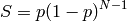
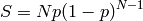
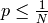
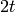
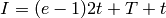
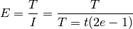
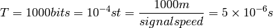

05 - Ethernet¶
10Base5 and 10Base2 are simple coaxial systems and where broadcast networks.
10BaseT (twisted pair) with hubs were the same, but just was simpler to create star topologies.
The problem with broadcast networks was collisions so the CSMA-CD protocol was used:
Each device senses the carrier, and starts transmitting if there is no carrier. If a collision is detected (more than one device starts transmitting at the same time) then a binary exponential back-off is started.
Aloha - Basic Technique¶
First random MAC developed for radio-based communication in Hawaii (1970).
The basic idea was that when a device is ready it transmits. The receiver sends an ACK for the data and a collision is assumed if the ACK timeouts. The device transmitting can recover from the collision by retransmitting after a random delay. If the delay is too short there can be a large number of collisions, if the delay is too long the network becomes under-utilised.
Slotted ALOHA¶
Time on the network is divided into equal sized slots (which are equal to the packet transmission time). A device with a packet transmits at the beginning of the next slot. If there is a collision each device retransmits their packet in some random future slot until transmission is successful.
Every time there is a collision a time slot is wasted.
Pure (Unslotted) ALOHA¶
...
Slotted ALOHA Efficiency¶
We might as the question “what is the maximum fraction of slots which were used successfully”.
Suppose  stations have packets to send. Each transmits in a slot with probability
stations have packets to send. Each transmits in a slot with probability  . The probability of successful transmission
. The probability of successful transmission  is for a single device:
is for a single device:

and the probability that only one of transmits in a particular time slot is:

For a stable network 
As the number of devices on a network () tends to infinity becomes which is about . THis means the channel can be used for transmissions 37% of the time.
Pure ALOHA¶
...
CSMA/CD¶
Engineers wanted to learn from ALOHA (which didn’t provide a very good throughput). The key to good throughput is the binary exponential back-off in order to not create more collisions, but still get packets through.
We can think of CSMA/CD as the ALOHA protocol with a slot size of . Collision windows in CSMA/CD are equivalent to ALOHA time slots. During a collision window a device is trying to reserve the wire for transmission.
The collision window is if  is the diameter of the network. Since thats the minimum time a device need in order to send a packet and receive a response.
is the diameter of the network. Since thats the minimum time a device need in order to send a packet and receive a response.
The interval  between successfully sent packets is:
between successfully sent packets is:

where  is number of bits in a packet, and is number of bits you can put onto the network before they have reached every devices on the network.
is number of bits in a packet, and is number of bits you can put onto the network before they have reached every devices on the network.
...
Efficiency¶
The efficiency of CSMA/CD is:

Say we have a 10Mbps network with a 500m diameter

This makes the efficiency about
.When you increase the speed of the network to say 100Mbps we must also increase the packet size by 10 fold also, in order to maintain the same efficiency. Protocols don’t want to send such large packets and thus CSMA/CD has stopped being used because of this.
Bridges to Switches¶
So CSMA/CD works well for certain packet sizes, physical network sizes and has speed trade-offs. Network traffic at 100Mbps started to stress CSMA/CD in larger LAN deployments. There was a need to move away from pure CSMA/CD. This move started with bridges which could partition CSMA/CD into smaller segments. Bridges originally connected two CSMA/CD segments but then evolved into bridges with lots of ports (called switches.)
Buffering¶
You could attach a CSMA/CD based segment to a switch, or used point to point links from each host to the switch. The switch buffers incoming packets in simple FIFO (first in first out) queues. Contention is resolved by scheduling packets to output queues, and simple queuing is possible in software at lower speeds.
...
Decoupling Rates¶
Once buffering was introduced it became possible to have different network speeds on each port, thus when a computer boots up it negotiates it speed with the switch port it is connected to.